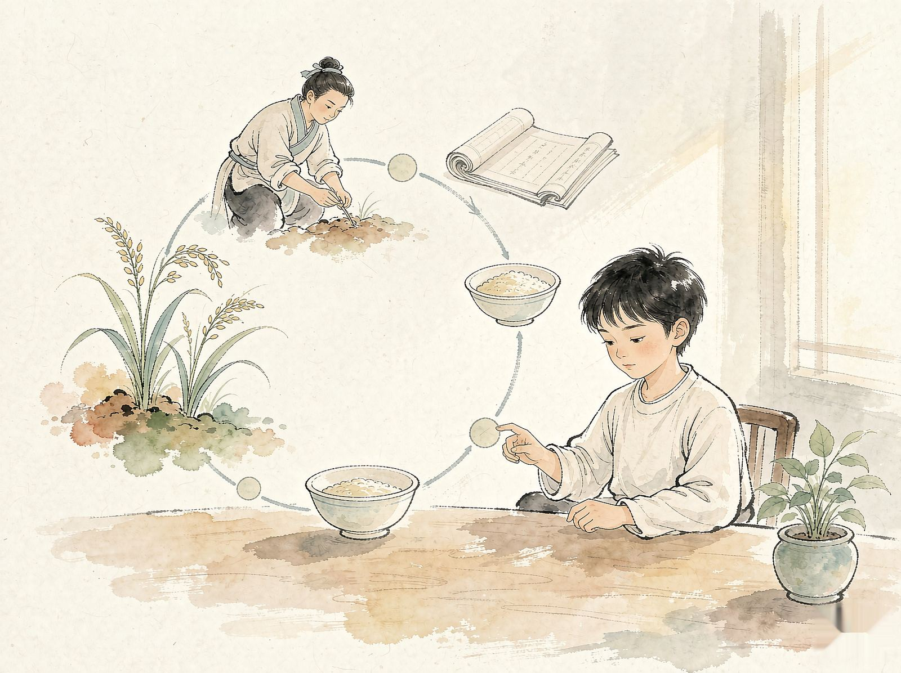

此六谷，人所食
对比前文三才：天地生谷，人取而食，正是三才相交、天人相接的日用节点。坤土生养，人承其德，色身方能存续，才有修学、践行五常的根基。俗见勘破：不是简单一句「这六种粮食是人吃的」。重点在「所食」——万物本来无「粮食」之名，是因人的需求、人的取舍，才把这一部分草木命名为谷。谷是假名，是缘起相待的标签，并非草木本身自带「食粮」的属性；鸟兽采食野果草籽，于鸟兽而言，那也是它们的「谷」。
前面我们认识了稻、粱、菽、麦、黍、稷六种谷物。
经文接着告诉我们：这六谷，是我们人类的主食。
同样是大地长出来的草木，野草、杂木，我们一般不吃；六谷经过先民世代培育，籽粒饱满，适合滋养我们的身体。

鸟兽觅食，多是随缘拾取；人要耕种、除草、等候时节、收割储藏，才能够稳定获得粮食。
身体依靠粮食滋养，我们才有精力读书、待人、修善。衣食安稳，是做人求学的起点。

落到心上理解：「粮食」是相待之名。草木本身无分别，因人之需，才有谷与杂草的区分。我们依赖食物，却不可执着滋味、贪求无度：食是缘，用来养护这个五蕴之身；借这个色身去观照、去修持，才是次第。若把吃食当成生命的目的，便是本末倒置。
认为六谷天然贵重，追逐精细美味，不断放大口腹之欲；以为杂草无用、唯谷可贵。
知晓谷物只是因缘和合的滋养之具，够用即止，重心向内；明白谷与野草，本体同为地生，差别只在对人的功用。
- 六谷，是人专门耕种取食的主食，维系身体生机。
- 谷的价值，是相对于人的滋养需求而建立的。
- 取食谷物，需要付出劳作，当知来之不易，常怀惜心。
- 饮食是基础，滋养身体是为了立身行道，而非纵情口腹。
一、勘俗见。很多注解停留在识字，这里的要义是相待缘起：万物本身没有固定标签，「粮食」是人建立的认知分别，和全书般若范式呼应。
二、现代对照。引导孩子看见食物背后的因缘：土地、雨水、阳光、农人的辛劳；同时区分「身体需要」和「想吃好吃的」。
三、承接常变主线。可食用的谷物、烹饪方式随时代持续变化，是可变之相；「以物养身，身载德行」的次第不变，是常。
四、承接教与学二分。家长引导惜粮、知因缘，属施教一侧；孩子慢慢放下对美食的贪执、懂得知足，是自主修习。
接上选择力练习：物本无贵贱，取舍在一心；食以养身，不令味尘牵心。
此六谷，人所食
一 · 字义与句读食，取之以养身。
全句释义：此稻粱菽麦黍稷六谷，是人择取、耕植，用以滋养色身。把天地生化之物，接入人的生命脉络，完成天人相接的一层日用缘起。
二 · 命题考辨（一）相待假名的核心义理。草木只是草木。对人而言，籽粒饱满、宜于充饥滋养，名为「谷」；其余草木不适宜食用，便唤作杂草。换到虫鸟的视角，野草的种子、花叶，也是它们的食粮。这就是经文暗藏的一层：一切名相，都是相待而立，恰是「佛说A，即非A，是名A」的现成示例。没有独立实存、恒常不变的「粮食」自性。
（二）对照当下现代语境。现代农学、营养学，会分析谷物的营养成分；经文不做成分辨析，重在体用次第。修行与修身，都不否定色身的供养，但警戒一件事：把资养的工具，变成追逐的目标。当代很多内耗，就来自不断刺激食欲、消费欲，把维持生命的饮食，变成享乐竞赛。
（三）般若范式互参。六谷、食者、滋养之效，三者因缘和合，缺一不可。联动空杯模型：虚空自性为本，水土、时节、人力为外缘，六谷、滋养是缘起显现。谷不能独立自存，人的色身也不能脱离外缘滋养；但二者都不是本体。
呼应「本乎数」：六是前面约定的归类之数，不代表天地间可供人食用的谷物只有六种，只是传习取象的方便。
（四）延伸义理。《金刚经》第十七分：「所言一切法者，即非一切法，是故名一切法。」这里以日常饮食直观演示：同样一粒谷，在仓中是储粮，种下是种子，入口是滋养，腐坏便是朽物——随缘换名，无固定自性。修行者托钵乞食，也是「取食养身」，但不住食相，正是这一层中道。
三 · 跨典互参《道德经》：「知足者富。」知食为资具，知止，即是知足。
《庄子·逍遥游》：「鹪鹩巢于深林，不过一枝；偃鼠饮河，不过满腹。」食量本有限，多余的追逐，都是心上的妄相。
串联前文：山河、四时、草木鸟兽，都是外缘；到这一句，外缘和我们的五蕴色身直接相接，日用大道就在一饭一食之间。
四 · 与前后课的张力呼应「人不学，不知义」：义即是明了相待缘起，分清资具与目标，不被口腹困住。
呼应「玉不琢，不成器」：打磨自心，就在一餐一饭之中，觉察贪味、知止知足。
呼应「教之道，贵以专」：见闻之学由造化万物，落于饮食日用，在最平凡处见般若。
次第链条继续延伸：…… → 稻粱菽，麦黍稷 → 本课
一、草木无自性，那滋养的作用从何而来？是谷的作用，还是因缘聚合的作用？
二、素食、肉食的取舍，在这套缘起框架之下，应当如何安放？
三、知食为资粮，如何避免走向对身体的苛待、节食苦行？